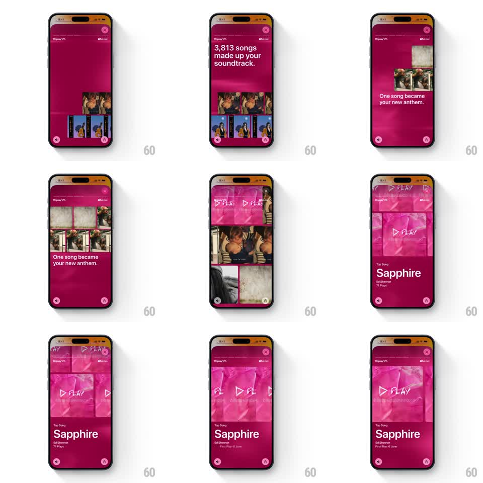

Media
Frame-by-frame

Rebuild this animation 1:1: Apple Music Replay '25 top-song story - a grid of album-art tiles under "3,813 songs made up your soundtrack." scatters as the copy flips to "One song became your new anthem.", then one tile zooms full-bleed into the top-song hero card over a repeating PLAY watermark.

Rebuild this animation 1:1: Apple Music Replay '25 top-song story - a grid of album-art tiles under "3,813 songs made up your soundtrack." scatters as the copy flips to "One song became your new anthem.", then one tile zooms full-bleed into the top-song hero card over a repeating PLAY watermark. ## Integration Integration: stack-agnostic spec - springs given as stiffness/damping, timed motions as duration + curve; map every value to your framework and animation library of choice. ## Scene Magenta/pink story screen (Replay '25 chrome as in the other Replay stories). Phase 1: headline "3,813 songs made up your soundtrack." above a loose 2-3 row grid of square album tiles. Phase 2: "One song became your new anthem." as tiles drift apart. Phase 3: one tile zooms to a full-width hero card showing the song's artwork with a giant outlined "PLAY" watermark tiled behind it; below, "Top Song" label, song title, artist, and play count. ## Motion spec Pattern: tile scatter + zoom-to-hero, ~3.5s. - Grid in: tiles pop in with a soft scale (0.8 -> 1, spring ~380/18, 40ms stagger, row by row). - Scatter: on the copy flip, tiles drift outward in random directions (150-250px, 500ms, ease-out) and fade to ~40% opacity. - Zoom: the winning tile animates from its grid position to full-bleed (450ms, ease-in-out), scaling ~3x while artwork cross-fades to its video/loop version. - Watermark: outlined "PLAY" text repeats in a diagonal tile behind the hero, drifting slowly (20px/2s, linear loop). - Info block: "Top Song" label, title, artist, plays fade/slide up (300ms, 60ms stagger). ## Calibration - The zoom must originate from the tile's actual grid position - a center-screen scale-up kills the continuity. - Watermark stays behind the artwork and moves slowly; fast watermark motion fights the hero. ## Reduced motion Grid fades in, then cross-fade to the hero card and info block (300ms); static watermark. ## Don't miss - Background color shifts to a saturated magenta/pink for this story - it is not the blue of the album story. - The hero artwork keeps animating (subtle loop) after the zoom lands.